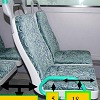
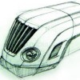
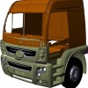
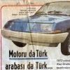

|
|
| Rapor - Makale
> Endüstriyel Tasarým: |
ÝETT otobüslerinin ergonomik analizi:
Ali Ýþeri, Nurullah Arslan, Fatih Üniv., Endüstri Müh. Böl., 13. Ulusal Ergonomi Kongresi, 6-7-8 Aralýk 2007, Kayseri
Bu çalýþmada Ýstanbul'un toplu ulaþýmýný saðlayan belediye otobüslerinin (ÝETT) ergonomik deðerlendirmesi yapýlmýþtýr. Deðerlendirmede ÝETT'nin kullanýldýðý modellerden biri ve en yenisi olan Citaro markalý otobüsler dikkate alýnmýþtýr... |
 |
Devrim arabalarýnýn tasarým boyutu:
Arif Özver Ergin, Ocak 2009, Ýstanbul
Devrim Arabalarý Türkiye'nin tamamen kendi olanaklarý ile gerçekleþtirdiði ilk deneyimdir... Bu yazýnýn amacý, Devrim Arabalarý'nýn Türkiye'nin ilk tasarýmý olup olmadýðýný sorgulamaktýr... |
 |
Bireysel icadýn anatomisi 2; Ýcadýn inovasyona dönüþme(me)si:
Arif Özver Ergin, Aralýk 2008, Ýstanbul
... Ýþte bu noktada icat ile inovasyonun ayrýmý ortaya çýkýyor ki bu süreç hem mucit hem de giriþimci için önemli dersler içeriyor. Bu da hikayenin ikinci bölümü... |
 |
ZuluDesign ve proje ortaklarý ürün geliþtirme prosesi ve örnek çalýþmalar:
Zafer Uluçay, ZuluDesign, Kasým 2005, Ýstanbul
Bu yazýda, ETMK ADesign Fair 2005 Yýlýn Genç Tasarýmcýsý Ödülü'nü kazanan Zafer Uluçay'ýn, proje ortaklarýyla yürüttüðü çeþitli tasarým çalýþmalarý hakkýnda bilgi ve fotoðraflar bulunmaktadýr... |
 |
RIVAGE konsept otomobil tasarým ve geliþtirme aþamalarý:
Bu çalýþmada amaç, Porsche Carrera 911 modeli klasik otomobil için yeni bir kabuk tasarlanýp imal edilmesidir. Modern 3D tarama ve CAD/CAM araçlarýnýn yerinde kullanýmý ve yardýmý sayesinde, yeni tasarýmýn eski iskelet ile hatasýz þekilde uyumlu olabilmesi saðlanmýþ ve tüm proje, sadece 7 ay gibi kýsa bir sürede bitirilebilmiþtir... |
 |
Röportaj: Mirzat Koç, Endüstriyel Tasarýmcý, IDEOLOG
Ellerimi kullanmaya her zaman çok önem vermiþimdir. Mekanizmalar ve karmaþýk þeyler her zaman ilgimi çekmiþtir. Çocukluk yýllarýnda yapmýþ olduðum paten ve çok tekerlekli kaykaylar, boya kutularýnýn üzerinde gerilmiþ deriden bateriler ve yaz tatillerinde öðrenmiþ olduðum el zanaatlardan biri olan zenne kunduracýlýðýný örnek verebilirim... |
 |
NUMARINE'de ürün geliþtirme çalýþmalarý:
Röportajlar: Muzaffer Erdal Kýlýç, Genel Md., Numarine A.Þ. - Can Yalman, Endüstriyel Tasarýmcý, Can Yalman Tasarým
Numarine, önemli oranda yerli katký ve kaynaklarla, yeni teknolojiler geliþtirip kullanarak Dünya çapýnda rekabetçi birçok model yat geliþtiriyor ve imal ediyor... |
 |
ASKAM Fargo Hi-Ex kamyon modeli için ürün geliþtirme çalýþmalarý (Röportaj: Erdinç Karaüç, Karoseri Aksamý ve Ar-Ge Müdürü):
ASKAM tarafýndan önemli oranda yerli tasarým ve mühendislik katkýsýyla üretilerek ilk olarak 2004 Aðustos ayý sonunda düzenlenen Ýzmir Enternasyonal Fuarý'nda tanýtýlan "Fargo Hi-Ex", yüksek konfor, geniþ kabin ve ekonomik fiyatý ile büyük ilgi gördü... |
 |
Ürün tasarým ve ergonomisine, tasarým kriterleri etkisinin CAD/CAM/CAE ortamýnda incelenmesi:
Selim Koca, Gazi Üniv. Kalýpçýlýk Öðretmenliði, Nisan 2007, Ankara
Bu makalede, bir TV uzaktan kumanda tasarýmýný etkileyen prensipler elektronik elemanlar göz önünde bulundurulmaksýzýn tasarým kriterleri çerçevesinde CAD/CAM/CAE ortamýnda iki farklý ürün üzerinde tartýþýlmaktadýr... |
|
Mucit olarak bir gencin hayal kýrýklýðý; Bireysel icadýn anatomisi:
Arif Özver Ergin,
Eylül 2007, Güzelyalý / Ýstanbul
Bireyler genelde ihtiyaçlarýný giderebilmek ya da problemlerine çözüm bulmak için bir þeyleri icat ederler. Ancak bireyin buluþuna ticari bir boyut kazandýrabilmesi çok zordur ve birey ve özellikle bir genç bu konuda yalnýz hareket ettiði sürece çaresizdir... |
|
Otomobil iç mekan tasarýmý; Ergonomi penceresinden bir bakýþ:
Türkay Dereli, Serap Ulusam Seçkiner, Alptekin Durmuþoðlu,
Endüstri Müh. Böl., Gaziantep Üniv., Þubat 2006, Gaziantep
Otomobil satýn alma sürecinde müþterilerin tercihlerinde etkili olan tasarým özelliklerinin büyük bir bölümü ergonomi bilimi ile ilgili olup, ergonomik faktörler araç içerisinde yolculuk yapan sürücü ve yolcularýn güvenliðinin ve konforunun saðlanmasý açýsýndan kritik öneme sahiptir... |
|
Röportaj > DesignUM ve Örnek bir Ürün Geliþtirme çalýþmasý:
Ümit Altun, Endüstriyel Tasarýmcý, DesignUM, Ocak 2006, Ýstanbul
1985 yýlýnda Mimar Sinan Üniv. Tasarým bölümü'nden mezun oldum. Ýlk iþim Otokar'da otomotiv tasarýmý üzerineydi. Ýki sene kadar burada çalýþtým. Ardýndan askerlik görevimden sonra Teletaþ'da mekanik ve endüstriyel tasarýmcý olarak göreve baþladým, orada 7 sene kadar çalýþtým. Daha sonra Arçelik'e geçtim ve Arçelik'te toplamda 10 yýl uzman tasarýmcý ve tasarým bölüm yöneticisi olarak çalýþtým... |
|
"Milli
Mesele" olarak Endüstriyel Tasarým:
Prof. Dr. Alpay Er, ÝTÜ Endüstri Ürünleri Tasarýmý
Bölümü, Eylül 2005, Ýstanbul
Türkiye'de
son zamanlarda yükselen deðerlerden birisi de "tasarým".
Özellikle son yýllarda medyanýn konuya artan ilgisi
bunun göstergelerinden birisi olarak deðerlendiriliyor...
Türkiye bu noktaya diðer birçok benzer ülkeye göre daha
geç ve çok daha hazýrlýksýz geldi. Artýk iyi bilinmesi
gereken bir þey var ki, bu sürecin geriye dönüþü yok!.. |
Otomotiv
sanayiinde endüstriyel tasarým; Artý deðerden de öte:
Doç. Dr. Mehmet Asatekin, ODTÜ Endüstri Ürünleri Tasarýmý
Bölümü, Mayýs 2005
Bu yazýda, aracýn genel görselliðinin
farklý kaynaklardan empoze edildiði Türk otomotiv sanayii
ve yan sanayiinde iç pazara ya da iç veya dýþ niþ pazarlara
yönelik özgün tasarýmlarýn önemli olduðu kanýsý ile
endüstriyel tasarým genelinin otomotiv sanayiine getirebileceði
görsel artý deðerlerden öte deðerler örneklenmiþtir... |
 |
"Endüstriyel
Tasarým" Kavramsal Ýçeriði ve Sanatla iliþkisi:
Özlem
(Yan) Devrim, Ekim 2005
"Industrial Design" aslýndan dilimize uyarlanan
"endüstriyel tasarým" kavramý, çoðu tüketici/halk
kesimi tarafýndan hiç bilinmiyor olmak veya ancak bir
sanat dalý olarak algýlanmak bir yana, bilindiðinin sanýldýðý
mühendislik dünyasý/piyasa/KOBÝ'lerde bile çoðunlukla
yanlýþ tanýmlanmakta; anlam/algý karmaþasý problemi yaratmaktadýr...
... bir mühendisin endüstriyel tasarým yapmamasý gerektiðini
iddia etmek, endüstriyel tasarýmýn bir sanatçýlýk olduðunu
iddia etmek anlamýna gelir... |
Endüstriyel
Ürünlerde Enerjinin Dönüþümü:
Özlem (Yan) Devrim, Aðustos 2004
Endüstriyel ürünleri; üretilme nedenleri / amaçlarý
/ þekilleri / yöntemleri, tasarým / üretim süreçleri
veya üretimlerinde kullanýlan ham maddeler / sektörler
veya üretildikleri ülkeler... gibi onlarca ve belki
yüzlerce deðiþik açýdan ele alýp incelemek mümkün...
Bu makalede, endüstriyel ürünler "kullanýmlarý
esnasýnda enerji ile iliþkileri" açýsýndan ele
alýnmýþtýr... |
"Tasarým
Kavramý" üzerine bir deneme:
Özlem Devrim, 10.10.2002
Eðer,
tasarým kavramýnýn ne olduðu üzerinde anlaþmaya varabilirsek,
iliþki / iletiþim içinde bulunduðumuz / kullandýðýmýz
ürünlerin / nesnelerin hangilerinin "tasarým"
içeriði taþýdýðý ve hangilerinin bu içeriðin dýþýnda kalýp,
bilimsellik çerçevesi / teknolojik alan / teknolojik buluþlar
içinde algýlanmasý gerektiðinde fikir birliðine (consensus:
agreement in opinion, feeling, etc.; general agreement,
as of opinion / hani Türkçede "konsensus" dediðimiz
þey.) varabiliriz... |
|
|
|
TurkCADCAM.net > Türkiye'nin yeni ürün tasarım, geliştirme, CAD/CAM/CAE, CNC, kalıp ve imalat teknolojileri portalı |
*****
Sektörün profesyonel bilgi ve işbirliği platformu ***** |
|
|
|
|
|
|